Thursday, September 21, 2017
London -> Bremen
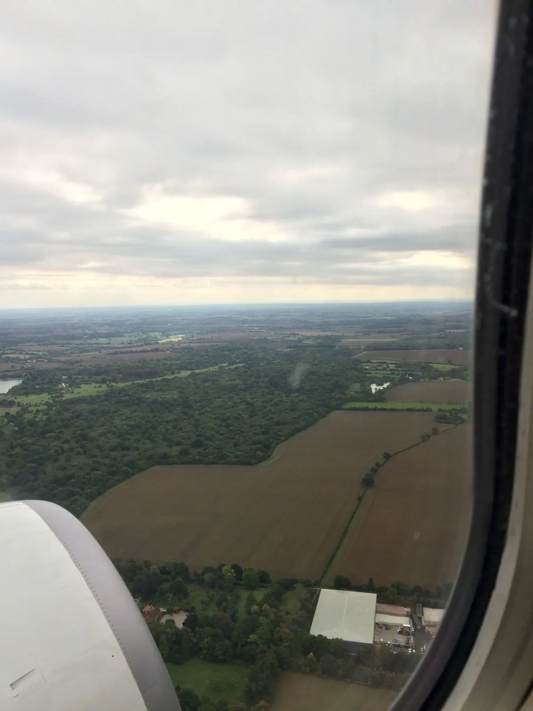
I always marvel at how crazy it is to walk into a plane and come out into a completely different world. I took the Tube to Liverpool, the Stansted Express to Stansted Airport, had a shrimp wrap, an hour flight, and just like that, was in Bremen, Germany! Everything was in German and there was little English (unlike Italian, where I could at least pick up some words, I understood zero German), but many people do speak English here. It took me a while to find where the tram was but when I found one and saw it was going to universitat, I got on.
Bremen was a nice little town: I passed by a fountain and playground, a park, a river, small town brick buildings with pointed roofs, buildings different from London and Italy but couldn’t put in words how. I looked around me—no Asians (unlike in London).
I arrived at the Hauptbahnhof (Hbf = main station) and a girl wearing a UNICEF jacket came up to me speaking to me in German with a smile. I said sorry, I don’t speak German. We can talk in English then! she said in fluent English. You should join UNICEF because it’s really important, she told me.
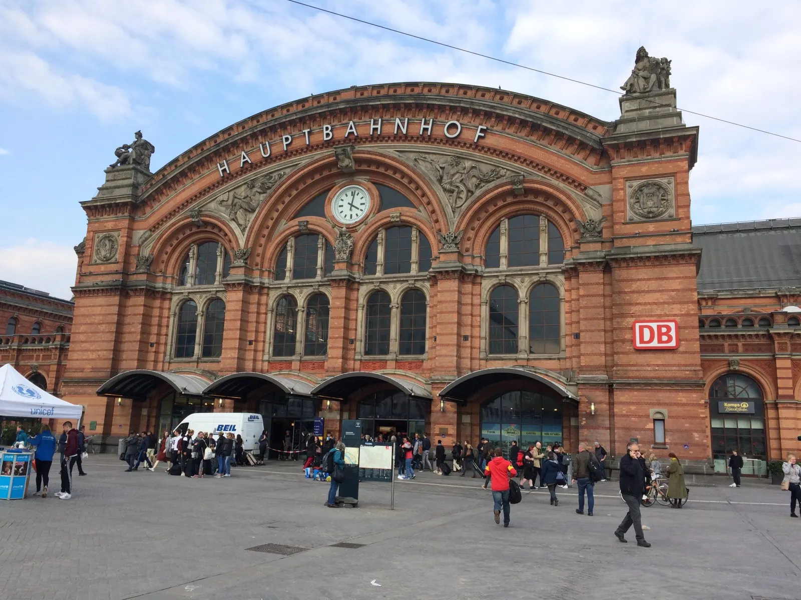
Rhoda, who I was staying with, met me at the train station and we took the train to Jacobs University, where she is studying abroad. Rhoda is quite a unique person, a great friend with a charming character and energetic, extroverted personality. I envy her ability to start conversations with new people and how she’s not afraid of what others think of her. We had a wonderful long dinner in the cafeteria along with the other Wellesley students studying there.
Friday, September 22, 2017
Food and fireworks
They had a wide assortment of foods for breakfast in the dining hall: apple turnovers, potato cream, croissants, wheat bread loaves, salad bar, donuts. We talked about STDs over breakfast, which Rhoda was very knowledgeable and passionate about.
I went on a run for the first time in ages in the cool refreshing 60º cloudy weather. I was clearly out of shape, but it felt good, and Jacobs had a beautiful campus to run in.
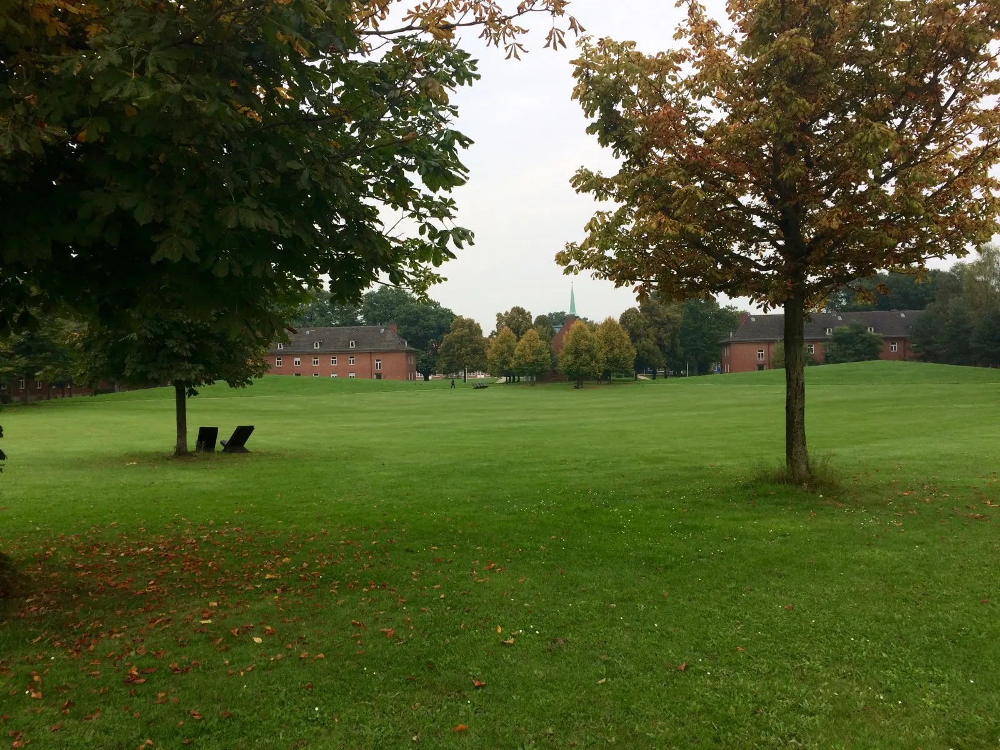
Spent the afternoon on my laptop; the hours flew by but I’m not sure what I got done. I have a book I need to start reading for my international relations tutorial at Oxford.
Took the bus to get groceries; I bought a couple frozen pasta dinners, which I’ve never done before, as well as fruits, bread, and cheese for breakfast. Their drugs are expensive, but Germany has good health care to make up for that. With a group of Wellesley students, we later took the tram to the downtown area of central Bremen to celebrate a Wellesley student’s birthday at Vapiano (pronounced Fabiano)—I had pumpkin soup with super soft bread and delicious pesto fusilli with pine nuts that wasn’t green.
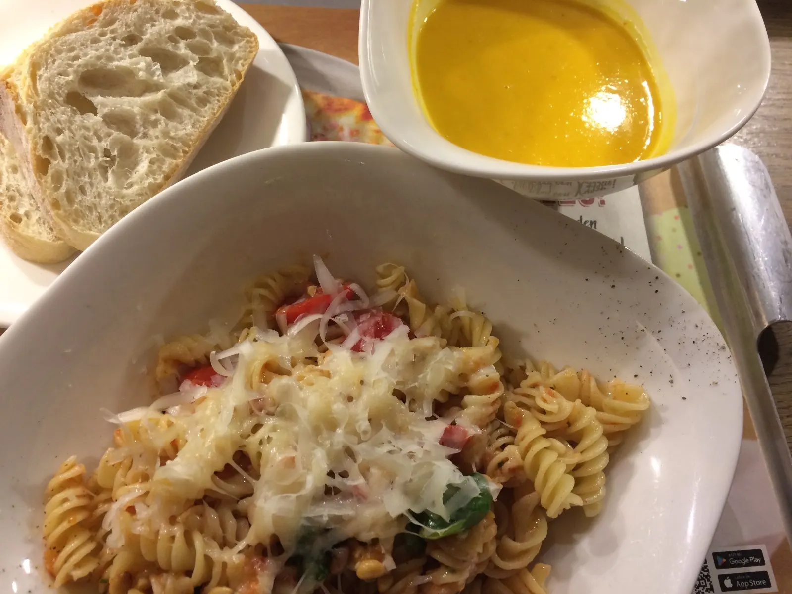
We walked to the river, where a festival was taking place. There were a line of booths selling crepes and steaming apple cider and sugar coated nuts and ice cream and potato pancakes and fried dough balls covered in powdered sugar. I got a cup of frozen yogurt with strawberries and blueberries, and I can say it was the best yogurt I’ve ever had—creamy and perfectly sour.
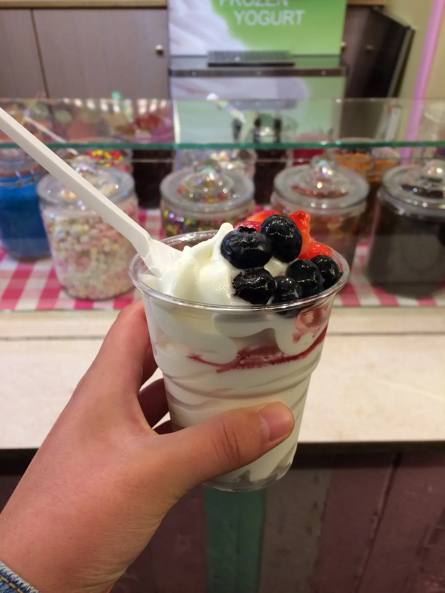
They had fireworks after dark, which was quite intense, with fireworks that came down like a corkscrew and a booming explosion of color and fireworks, the largest explosion and volume of fireworks I’ve ever seen.
People here sure know how to have a good, relaxing time.
Saturday, September 23, 2017
Delicious Ghanaian food and exploring Bremen!
Had only an apple and nuts to keep me going because Rhoda, Jennifer and I had lunch at a Ghanaian restaurant called Mommies Corner, and Ghanaian food comes in BIG portions. I had a plate of beans and fried plantains—the beans were so flavorful, spiced with tomato, garlic, onion, and pepper. That’s why I don’t like American beans, Rhoda said. She also had a spicy beef stew with dough of fermented maize and fermented cassava. It was like a 馒头 but sour and stretchy like play dough, and you eat it with your hands. That was my first Ghanaian meal though, and it was very good.
Rhoda and I explored downtown Bremen after lunch. We walked along the Schlachte harbor district, used in the 17th and 18th c. for shipping traffic and trade, where inns and cellar taverns flourished.
It was by the same river we were at last night, lined with restaurants and food booths, singers performing from the back of a truck. On the river we saw strange boats pedaled by foot but like a raft, a canoe-like boat pedaled by foot with the 2 people facing each other, a boat with the foot pedals propelling a propeller spinning behind them. People, mostly old couples, were strolling along the river or listening to the street performers, sitting with a cup of white wine or a glass of beer.
We continued exploring the city and walked around Old Town Hall. We saw churches with green domes and Altes Rathaus, a late medieval town. Old Town Hall stood for the civic autonomy and liberty of a city state. We saw a statue of a rooster on top of a cat on top of a dog on top of a donkey, and people were rubbing the donkey’s legs for good luck.
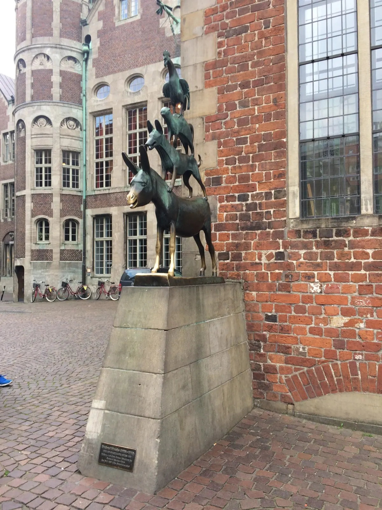
We went inside a historical exhibit, and someone there explained the story behind the statue: the animals were looking in at a feast that was going on inside the house, and to get inside and to the feast they stood on top of each other. The statue was blue green from rust; only the donkey’s legs were gold from all the people rubbing it.
I sometimes forget where I am—I realized that Germany elections are tomorrow and forgot that I was in Germany—but am fascinated by the architecture and atmosphere. I love the casual, relaxing atmosphere here. Comparable to Boston Common? Maybe sorta.
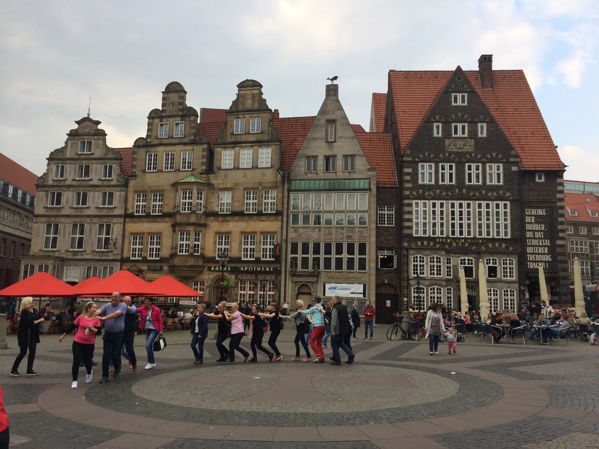
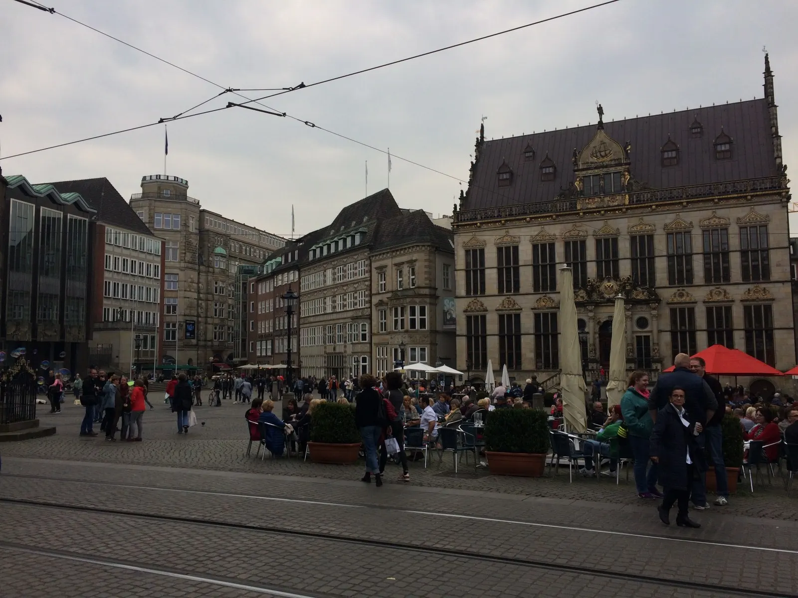
We went into a Starbucks and got coffee; I had a pumpkin spice latte which was expensive but why not, I was in the mood. American stuff in general seems more expensive here.
We followed violin music and the crowd down a narrow corridor lined with shops selling goods like sheep milk soap. As the sun was setting we took the train back to Jacobs. I got caught this time without a ticket; thankfully the ticket person just gave me a receipt to pay at the station.
Jacobs University had games that night—a cheerleading competition between the various schools that make up the university—so I went and pretended to be a student there. I felt like I was back at my high school pep rally. But the cheerleading was good.
Sunday, September 24, 2017
A day in Hamburg
Rhoda and I ran to make the 12:37 train to Hauptbahnhof (Hbf), the Bremen main station, and from there bought a ticket for 23 euros to Hamburg and back. This isn’t the first time we’ve had to run to make the train, but it always feels good (and a bit exhilarating) when you just make it. I didn’t bring enough euros in my wallet and only had coins left when I bought a wurst croissant (croissant with a sausage inside) at a café. When the lady at the counter said they don’t take credit card, I was debating whether to go somewhere else instead and was about to count the coins in my wallet, when a man standing next to me interjected and announced, “I’ll pay for it!” All I could say was Danke shune and thank you so much. There truly are good people in this world.
I studied accounting interview questions on the train. Looking up every now and then, we passed clay tennis courts and fields of green grass and trees.
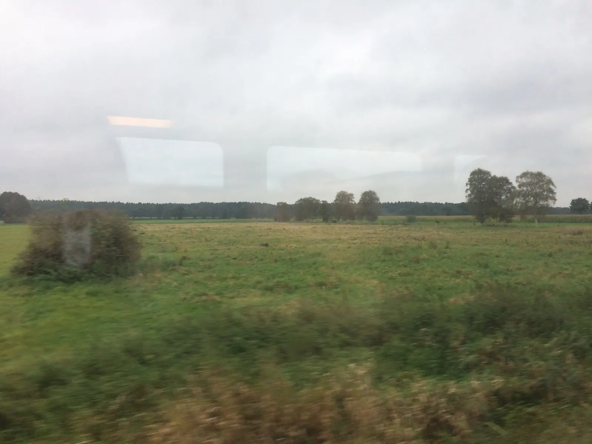
An hour later the train arrived in Hamburg.
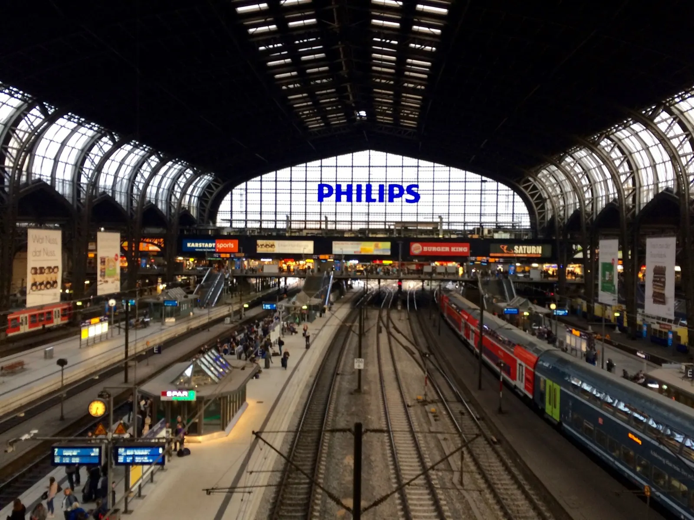
Is Hamburg named after hamburger? Apparently hamburger is named after Hamburg: the most likely explanation is that an American cook who served briefly on board of ships traveling between Europe and the United States ran out of casings to make sausages and was told by a junior officer to “simply fry the meat” as they did in Germany. Once retired from active duty, he began selling “steaks, Hamburg style” at the harbors, attempting to attract German and European travelers, some of which took the idea with them to NYC and Chicago, integrating it into their foods.
We only had 3-4 hours here, so we just walked around. Unlike in Italy, where we planned each day of our trip—places to see, how long it would approximately take, places to eat, time it would take to get from place to place—I wanted to just walk around freely, with no obligation or destination, and enjoy the port town. We walked down to the port, enjoying the small town and river views.
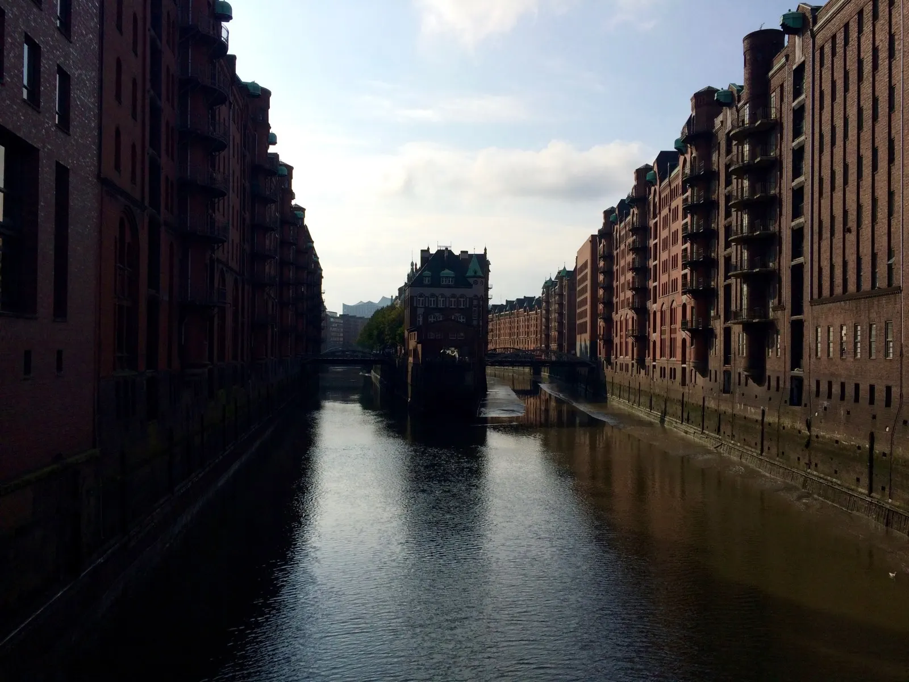
Apparently jaywalking here isn’t a thing. We crossed as a car was approaching and it honked at us, though it wasn’t nearly close enough to hit us.
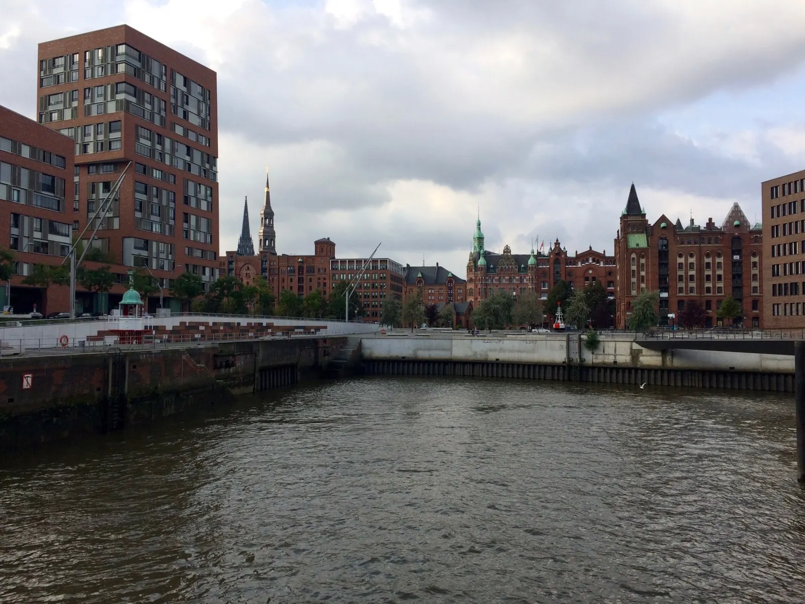
Dinner was currywurst (deep-fried sausage with curry sauce and curry powder on top) with brotchen (bread roll) on the side. Lots of carbs, cheese, and sausage.
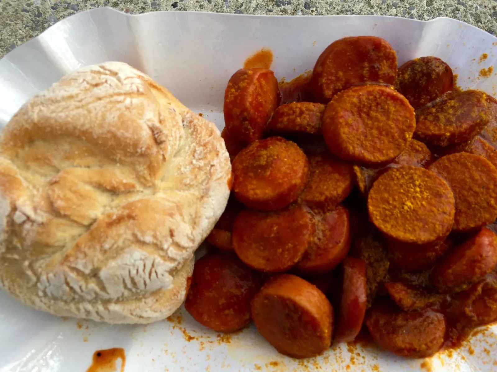
We ate with a view of the river.

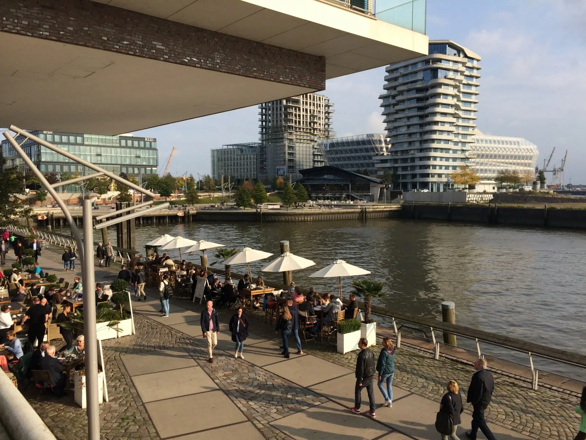

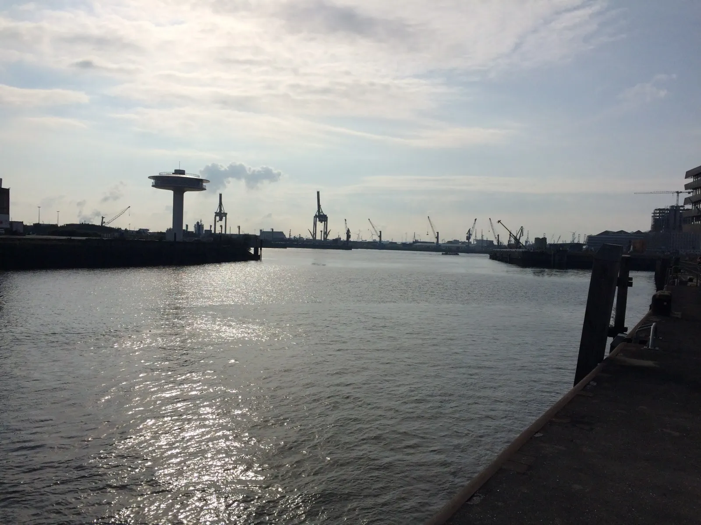
I didn’t buy a train ticket from Bremen Hbf back to Jacobs, and of course the same guy who caught me on Saturday without a ticket was coming around to check again. Rhoda immediately said let’s get off the train, and we got out before he got to our seat. Ihni what I would’ve said, but I was glad to wait 20 minutes out in the cold for the next train. We laughed at how mischievous we were. A couple trains went by as we sat there waiting—they were so loud it was a bit frightening. Then when we got off the train at home, we saw 3 guys cut across the railroad tracks. Rhoda watched them and said disapprovingly, “Those boys.” Then, to my astonishment, she followed after them. It was much shorter than going around, and tbh, doing risky things was a bit exhilarating…as long as there wasn’t too much risk involved.
Monday, September 25, 2017
A morning jog
The fear of your laptop running out of battery—it’s an awful feeling. My charger stopped working and would only charge occasionally, so I never knew when it would decide to work. So I went on a run in the 60º morning on a trail in the forest right outside the campus—it was so green and beautiful, a contrast from the stress of technology.
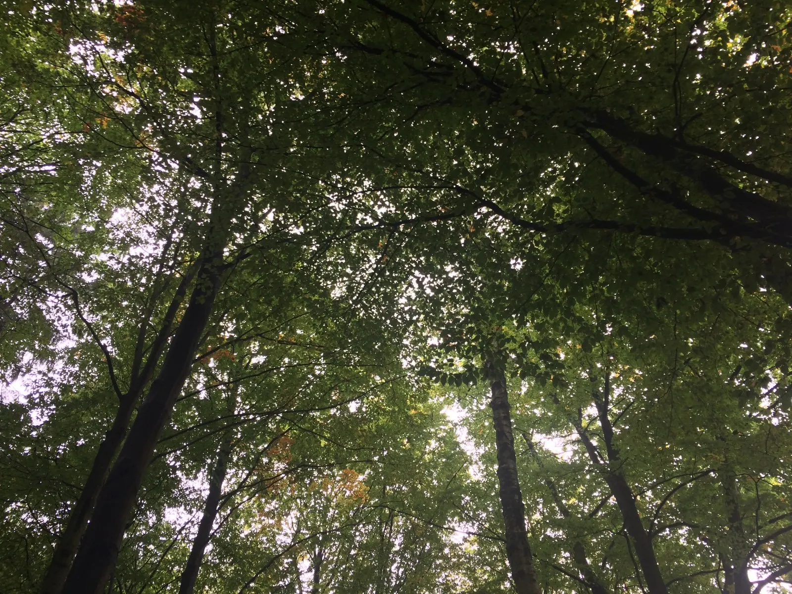
Tuesday, September 26, 2017
A morning jog
Went to the coffee bar for a croissant sandwich and berry smoothie (the only food on campus that takes cash) before doing some reading for my International Relations tutorial; my tutor asked me to write a book review on Kenneth Waltz’s Man, the State, and War, which analyzes the causes of war. I’m already stressed about Oxford—I just got an email today from my other tutorial professor who sent a bunch of reading assignments to do. But I feel like I’m finally getting back to academic work.
Wednesday, September 27, 2017
A morning jog and a trip to a café/art gallery
After going on a run (which wasn’t as great as yesterday’s because part of it was in the city, next to cars), I went on a walk to Knoops Park which was super pretty and refreshing, especially after sitting on my butt all day yesterday.
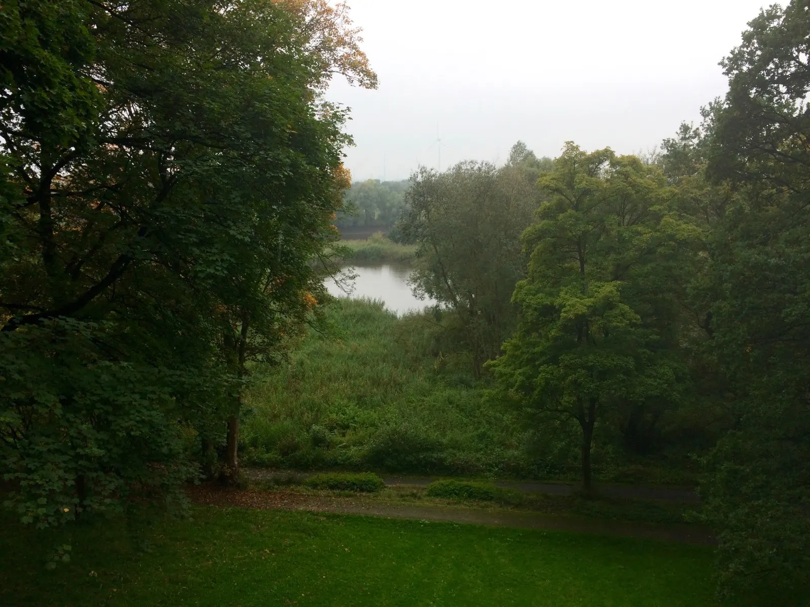
I observed that the streets here don’t have a bike lane but instead have a bike sidewalk lane (so as a sidewalk, next to the walking sidewalk). Also, the birds here fly away when you’re still a few feet away, unlike London pigeons.
On the street I said hello to an old man, and he responded cheerfully. I stopped by a café and art gallery, which was a small room full of interesting, grotesque art. The only artist name I remember is Michael Croissant.
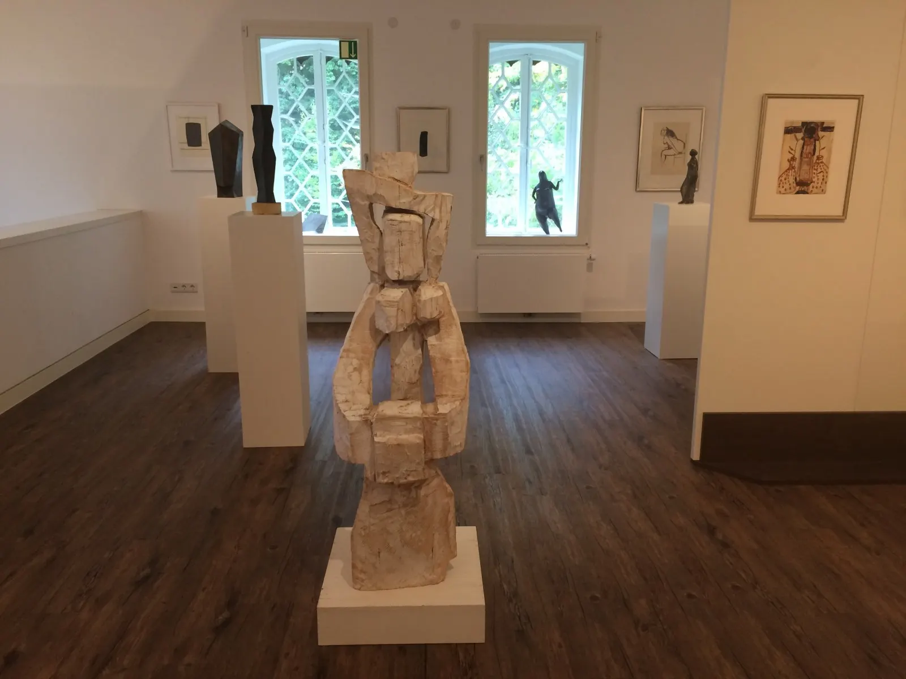
I saw this antique by the door and found it quite curious.
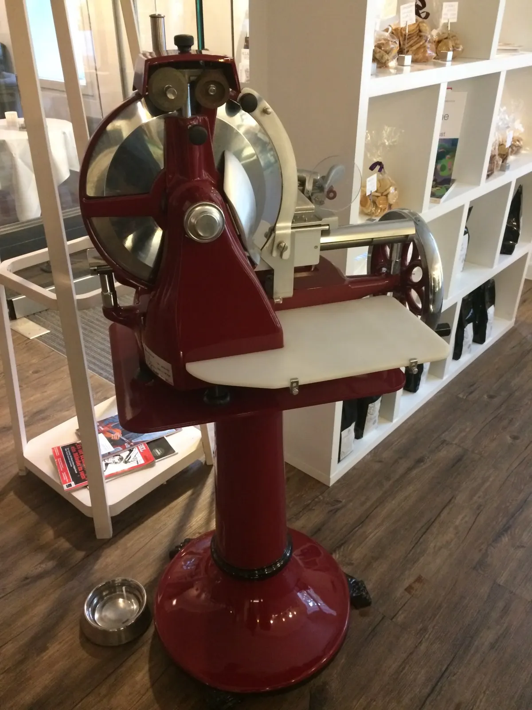
I asked the lady at the counter what it was, but her English was not very good and she had a hard time explaining, but I eventually got that it was for cutting meat. I bought a bag of shortbread cookies because I was craving sweets, though they turned out to be not as sweet as I had anticipated.
The fear of not being able to charge my laptop continues: I keep trying again and again, and sometimes when I plug it in it produces sparks, which do not determine the success of the connection. I was so relieved when the light appeared on the charger. I’m pretty sure the charger is faulty.
Pork with sauerkraut and pineapple was my last dinner in Bremen.
I am glad to have had the time to take a break from traveling. While I wish I had the time to make a trip to Berlin or Hannover or Munich (for Oktoberfest), I was happy I got to see and live in a small, beautiful, non-touristy German town, and of course visiting Rhoda made the week special and fun in itself. Now onto a new adventure!